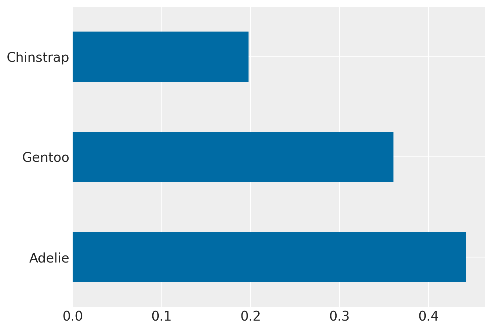
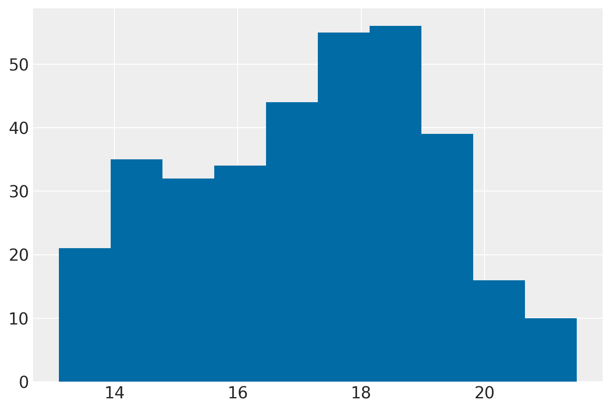
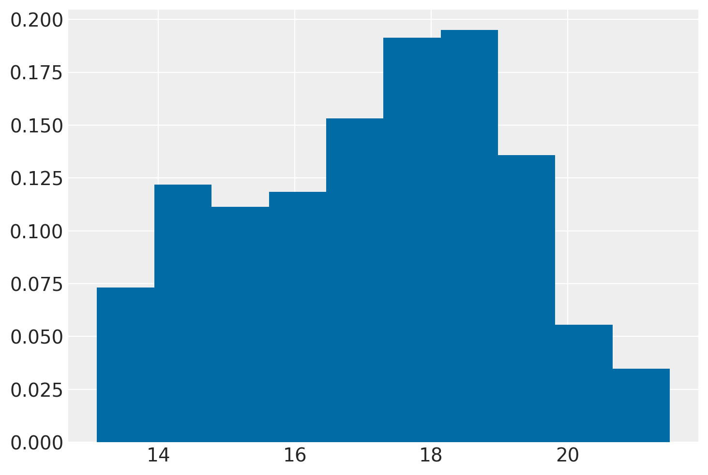
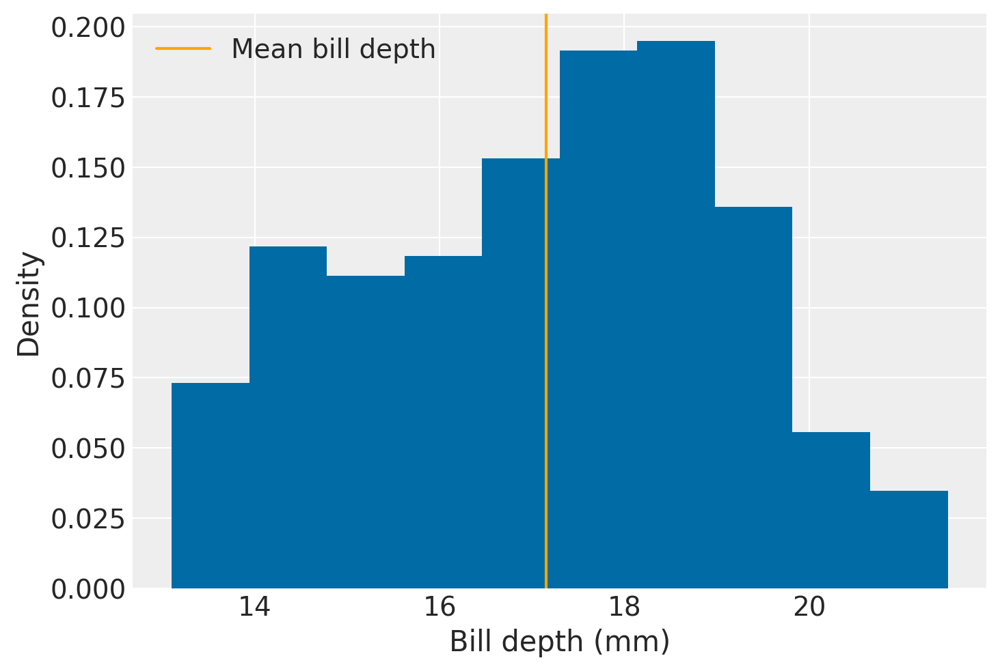

Comandi utili in Pandas
Contents
Comandi utili in Pandas#
In questo Notebook presento una serie di comandi che trovo utili per l’analisi e la manipolazione di dati con Pandas. Inizio a importare le librerie necessarie.
from pathlib import Path
import pandas as pd
import numpy as np
import matplotlib.pyplot as plt
import arviz as az
# To render higher resolution images and to control the plot style.
%config InlineBackend.figure_format = 'retina'
az.style.use("arviz-darkgrid")
plt.style.use('tableau-colorblind10')
Leggere i dati#
La pipeline di analisi dati inizia con l’importazione o la creazione di un dataset. In questo esempio userò nuovamente i dati palmerpenguins messi a disposizione da Allison Horst. Per creare un DataFrame leggo un file csv da internet usando .read_csv():
data_url = 'https://raw.githubusercontent.com/allisonhorst/palmerpenguins/master/inst/extdata/'
file_name = 'penguins.csv'
file_url = data_url + "/" + file_name
df = pd.read_csv(file_url)
Esaminare il DataFrame#
Ottengo il nome delle colonne di df con il metodo .columns:
df.columns
Index(['species', 'island', 'bill_length_mm', 'bill_depth_mm',
'flipper_length_mm', 'body_mass_g', 'sex', 'year'],
dtype='object')
Visualizzo le prime 5 righe di df con .head():
print(df.head())
species island bill_length_mm bill_depth_mm flipper_length_mm \
0 Adelie Torgersen 39.1 18.7 181.0
1 Adelie Torgersen 39.5 17.4 186.0
2 Adelie Torgersen 40.3 18.0 195.0
3 Adelie Torgersen NaN NaN NaN
4 Adelie Torgersen 36.7 19.3 193.0
body_mass_g sex year
0 3750.0 male 2007
1 3800.0 female 2007
2 3250.0 female 2007
3 NaN NaN 2007
4 3450.0 female 2007
Visualizzo le ultime 5 righe:
print(df.tail())
species island bill_length_mm bill_depth_mm flipper_length_mm \
339 Chinstrap Dream 55.8 19.8 207.0
340 Chinstrap Dream 43.5 18.1 202.0
341 Chinstrap Dream 49.6 18.2 193.0
342 Chinstrap Dream 50.8 19.0 210.0
343 Chinstrap Dream 50.2 18.7 198.0
body_mass_g sex year
339 4000.0 male 2009
340 3400.0 female 2009
341 3775.0 male 2009
342 4100.0 male 2009
343 3775.0 female 2009
La funzione .describe() fornisce delle informazioni descrittive del dataset. Queste informazioni includono delle statistiche che riassumono la tendenza centrale della variabile, la loro dispersione, la presenza di valori vuoti e la loro forma:
df.describe().round(1)
| bill_length_mm | bill_depth_mm | flipper_length_mm | body_mass_g | year | |
|---|---|---|---|---|---|
| count | 342.0 | 342.0 | 342.0 | 342.0 | 344.0 |
| mean | 43.9 | 17.2 | 200.9 | 4201.8 | 2008.0 |
| std | 5.5 | 2.0 | 14.1 | 802.0 | 0.8 |
| min | 32.1 | 13.1 | 172.0 | 2700.0 | 2007.0 |
| 25% | 39.2 | 15.6 | 190.0 | 3550.0 | 2007.0 |
| 50% | 44.4 | 17.3 | 197.0 | 4050.0 | 2008.0 |
| 75% | 48.5 | 18.7 | 213.0 | 4750.0 | 2009.0 |
| max | 59.6 | 21.5 | 231.0 | 6300.0 | 2009.0 |
La funzione .info() restituisce informazioni sul tipo di dato, valori non nulli e utilizzo di memoria:
df.info()
<class 'pandas.core.frame.DataFrame'>
RangeIndex: 344 entries, 0 to 343
Data columns (total 8 columns):
# Column Non-Null Count Dtype
--- ------ -------------- -----
0 species 344 non-null object
1 island 344 non-null object
2 bill_length_mm 342 non-null float64
3 bill_depth_mm 342 non-null float64
4 flipper_length_mm 342 non-null float64
5 body_mass_g 342 non-null float64
6 sex 333 non-null object
7 year 344 non-null int64
dtypes: float64(4), int64(1), object(3)
memory usage: 21.6+ KB
Se applico il metodo .shape sul dataset, Pandas restituisce una coppia di numeri che rappresentano la dimensionalità del dataset: il numero di righe e il numero di colonne.
print(df.values.shape)
(344, 8)
Ci sono 344 righe e 8 colonne.
Se le operazioni di manipolazione del dataset richiedono molto tempo (non nel caso presente), è utile avere una copia del dataset originale, nel caso di errori di vario tipo (cancellare per sbaglio una colonna o trasformarla in maniera diversa da quella desiderata).
df2 = df.copy()
Visualizzare le modalità di una variabile#
La funzione unique() resituisce le modalità di una variabile:
df['species'].unique()
array(['Adelie', 'Gentoo', 'Chinstrap'], dtype=object)
La funzione value_counts() restituisce la distribuzione di frequenza assoluta di una variabile del DataFrame. Per la variabile species ottengo:
df['species'].value_counts(normalize=False)
Adelie 152
Gentoo 124
Chinstrap 68
Name: species, dtype: int64
Le frequenze relative si ottengono ponendo normalize=True:
df['species'].value_counts(normalize=True)
Adelie 0.441860
Gentoo 0.360465
Chinstrap 0.197674
Name: species, dtype: float64
Come abbiamo già visto nel capitolo Introduzione alla data analisi, è semplice costruire un diagramma a barre per la distribuzione di frequenza:
df.species.value_counts(normalize=True).plot(kind="barh")
<AxesSubplot: >

In maniera simile, è possibile applicare il metodo .hist() ad una colonna numerica del DataFrame per ottenere un istogramma. Per esempio:
df['bill_depth_mm'].hist()
<AxesSubplot: >

Dato che la funzione hist() utilizza matplotlib, possiamo passare a hist() gli argomenti che sono disponibili in matplotlib. Per esempio:
df['bill_depth_mm'].hist(density=True)
<AxesSubplot: >

Consideriamo nuovamente la grossezza (depth) del becco.

Calcoliamo la proporzione di pinguini per i quali la grossezza del becco è minore della media:
mean_bill_depth = np.mean(df['bill_depth_mm'])
frac_below_mean = (df['bill_depth_mm'] < mean_bill_depth).mean()
print(f"{frac_below_mean:2.1%} of penguins are below the mean")
46.5% of penguins are below the mean
Usando le funzioni di matplotlib.pyplot, creo un istogramma della grossezza (depth) del becco che riporta l’indicazione della media:
plt.hist(df['bill_depth_mm'], density=True)
plt.xlabel("Bill depth (mm)")
plt.ylabel("Density")
plt.axvline(mean_bill_depth, color="orange", label="Mean bill depth")
plt.legend()
<matplotlib.legend.Legend at 0x7fe61c73f7f0>

Selezionare le colonne con filter#
Molto spesso è necessario concentrarci su un sottoinsieme delle colonne del dataset. Per esempio qui di seguito seleziono unicamente due colonne:
keep_cols = ['bill_length_mm', 'bill_depth_mm']
df_v2 = df.filter(keep_cols)
df_v2.head()
| bill_length_mm | bill_depth_mm | |
|---|---|---|
| 0 | 39.1 | 18.7 |
| 1 | 39.5 | 17.4 |
| 2 | 40.3 | 18.0 |
| 3 | NaN | NaN |
| 4 | 36.7 | 19.3 |
Oppure è possibile che si vogliano eliminare una o più colonne:
drop_cols = ['sex', 'year']
df2.drop(drop_cols, axis=1, inplace=True)
df2.head(2)
| species | island | bill_length_mm | bill_depth_mm | flipper_length_mm | body_mass_g | |
|---|---|---|---|---|---|---|
| 0 | Adelie | Torgersen | 39.1 | 18.7 | 181.0 | 3750.0 |
| 1 | Adelie | Torgersen | 39.5 | 17.4 | 186.0 | 3800.0 |
Si noti che axis=1 si riferisce alle colonne mentre axis=0 fa riferimento alle righe. L’argomento inplace impostato su True aggiorna l’oggetto originale in maniera permanente.
Selezionare le righe con isin#
Un’operazione molto comune nell’analisi dei dati corrisponde alla selezione di un insieme di righe dal DataFrame. Supponiamo di volere escludere tutte le osservazioni (righe) che si riferiscono all’isola Torgersen. Per prima cosa stampo le modalità di island:
df.island.unique()
array(['Torgersen', 'Biscoe', 'Dream'], dtype=object)
Ora elenco le modalità che voglio mantenere:
filtered_list = ['Biscoe', 'Dream']
Infine, applico il medoto .isin():
check1 = df[df['island'].isin(filtered_list)]
check1['island'].unique()
array(['Biscoe', 'Dream'], dtype=object)
Ordinare le colonne#
Talvolta è utile avere nel DataFrame le colonne in un certo ordine.
df.head(2)
| species | island | bill_length_mm | bill_depth_mm | flipper_length_mm | body_mass_g | sex | year | |
|---|---|---|---|---|---|---|---|---|
| 0 | Adelie | Torgersen | 39.1 | 18.7 | 181.0 | 3750.0 | male | 2007 |
| 1 | Adelie | Torgersen | 39.5 | 17.4 | 186.0 | 3800.0 | female | 2007 |
Ora cambio l’ordine delle colonne applicando il metodo .reindex():
new_order = ['species', 'island', 'sex', 'year', 'flipper_length_mm', 'body_mass_g',
'bill_length_mm', 'bill_depth_mm']
df_new = df.reindex(new_order, axis=1)
df_new.head(2)
| species | island | sex | year | flipper_length_mm | body_mass_g | bill_length_mm | bill_depth_mm | |
|---|---|---|---|---|---|---|---|---|
| 0 | Adelie | Torgersen | male | 2007 | 181.0 | 3750.0 | 39.1 | 18.7 |
| 1 | Adelie | Torgersen | female | 2007 | 186.0 | 3800.0 | 39.5 | 17.4 |
Rinominare le colonne#
Molto spesso succede di volere rinominare le colonne del DataFrame. A questo fine è possibile usare il metodo .rename(). Si presti attenzione alla sintassi 'old_name': 'new_name':
df_new = df_new.rename(
# 'old_name': 'new_name'
columns={'bill_length_mm': 'bill_length',
'bill_depth_mm': 'bill_depth'
})
df_new.head(2)
| species | island | sex | year | flipper_length_mm | body_mass_g | bill_length | bill_depth | |
|---|---|---|---|---|---|---|---|---|
| 0 | Adelie | Torgersen | male | 2007 | 181.0 | 3750.0 | 39.1 | 18.7 |
| 1 | Adelie | Torgersen | female | 2007 | 186.0 | 3800.0 | 39.5 | 17.4 |
Convertire un DataFrame in formato long#
Capita spesso che i dati siano in formato wide, ovvero con le misurazioni (per esempio, temporali) dello stesso soggetto (o unità statistica) poste su diverse colonne. Quasi sempre vogliamo però che i dati siano in formato tidy (in questo caso, long), con tutti i dati della stessa variabile nella stessa colonna. È dunque necessario convertire un DataFrame dal formato wide a long.
Per mostrare come si fa, creo un DataFrame più piccolo. Supponiamo che vi siano 4 soggetti, ciascuno identificato da un codice (subj_idx), i quali sono stati esaminati in 2 condizioni (A, B). I soggetti sono stati esaminati in tre momenti temporali diversi (t_1, t_2, t_3). Qui sotto presento i dati nel formato wide, nel quale le misurazioni (t_1, t_2, t_3) sono presenti su tre colonne:
mydf = pd.DataFrame({"subj_idx": ['h38g18', 'hjds36', 'ghs41j', 'd33gjz'],
"condition": ['A', 'B', 'A', 'A'],
"t_1": [10.2, 9.6, 8.8, 5.2],
"t_2": [1.1, 3.5, None, 66.],
"t_3": [2.5, 1.3, 1.7, None]})
mydf
| subj_idx | condition | t_1 | t_2 | t_3 | |
|---|---|---|---|---|---|
| 0 | h38g18 | A | 10.2 | 1.1 | 2.5 |
| 1 | hjds36 | B | 9.6 | 3.5 | 1.3 |
| 2 | ghs41j | A | 8.8 | NaN | 1.7 |
| 3 | d33gjz | A | 5.2 | 66.0 | NaN |
Si noti che ho costruito il DataFrame utilizzando la sintassi del dizionario. In maniera equivalente, posso procedere nel modo seguente:
mydf = pd.DataFrame()
subj_idx = ['h38g18', 'hjds36', 'ghs41j', 'd33gjz']
condition = ['A', 'B', 'A', 'A']
t_1 = [10.2, 9.6, 8.8, 5.2]
t_2 = [1.1, 3.5, None, 66.]
t_3 = [2.5, 1.3, 1.7, None]
mydf['subj_idx'] = subj_idx
mydf['condition'] = condition
mydf['t_1'] = t_1
mydf['t_2'] = t_2
mydf['t_3'] = t_3
mydf
| subj_idx | condition | t_1 | t_2 | t_3 | |
|---|---|---|---|---|---|
| 0 | h38g18 | A | 10.2 | 1.1 | 2.5 |
| 1 | hjds36 | B | 9.6 | 3.5 | 1.3 |
| 2 | ghs41j | A | 8.8 | NaN | 1.7 |
| 3 | d33gjz | A | 5.2 | 66.0 | NaN |
Per molte analisi dei dati è necessario che i dati siano in formato long, ovvero, per l’esempio presente, nella forma di un DataFrame in cui è presente una colonna con tre modalità (t_1, t_2, t_3) e una colonna che riporta i valori che originariamenete erano nelle tre colonne t_1, t_2, t_3 del DataFrame mydf. Il risultato desiderato si ottiene con il metodo .melt():
mydf_long = mydf.melt(id_vars=['subj_idx', 'condition'])
mydf_long
| subj_idx | condition | variable | value | |
|---|---|---|---|---|
| 0 | h38g18 | A | t_1 | 10.2 |
| 1 | hjds36 | B | t_1 | 9.6 |
| 2 | ghs41j | A | t_1 | 8.8 |
| 3 | d33gjz | A | t_1 | 5.2 |
| 4 | h38g18 | A | t_2 | 1.1 |
| 5 | hjds36 | B | t_2 | 3.5 |
| 6 | ghs41j | A | t_2 | NaN |
| 7 | d33gjz | A | t_2 | 66.0 |
| 8 | h38g18 | A | t_3 | 2.5 |
| 9 | hjds36 | B | t_3 | 1.3 |
| 10 | ghs41j | A | t_3 | 1.7 |
| 11 | d33gjz | A | t_3 | NaN |
Per chiarezza rinomino le due nuove colonne:
mydf_long = mydf_long.rename(
# 'old_name': 'new_name'
columns={'variable': 'time',
'value': 'y'
})
mydf_long
| subj_idx | condition | time | y | |
|---|---|---|---|---|
| 0 | h38g18 | A | t_1 | 10.2 |
| 1 | hjds36 | B | t_1 | 9.6 |
| 2 | ghs41j | A | t_1 | 8.8 |
| 3 | d33gjz | A | t_1 | 5.2 |
| 4 | h38g18 | A | t_2 | 1.1 |
| 5 | hjds36 | B | t_2 | 3.5 |
| 6 | ghs41j | A | t_2 | NaN |
| 7 | d33gjz | A | t_2 | 66.0 |
| 8 | h38g18 | A | t_3 | 2.5 |
| 9 | hjds36 | B | t_3 | 1.3 |
| 10 | ghs41j | A | t_3 | 1.7 |
| 11 | d33gjz | A | t_3 | NaN |
Salvare un file csv#
Se vogliamo salvare i dati contenuti in un DataFrame usiamo il metodo .to_csv(). Ad esempio, salvo nella cartella data il file my_new_file.csv che contiene i dati mydf_long:
mydf_long.to_csv('data/my_new_file.csv')
/Users/corrado/opt/anaconda3/envs/bambi_env/lib/python3.8/site-packages/pandas/core/internals/blocks.py:2323: RuntimeWarning: invalid value encountered in cast
values = values.astype(str)
Per controllare che abbia funzionato, esamino i file della cartella data:
import os
print(os.system("ls -al data"))
total 1472
drwxr-xr-x 15 corrado staff 480 Jan 6 07:31 .
drwxr-xr-x 61 corrado staff 1952 Jan 6 18:30 ..
-rw-r--r--@ 1 corrado staff 6148 Jan 4 09:47 .DS_Store
-rw-r--r-- 1 corrado staff 44762 Nov 20 08:11 MehrSongSpelke_exp_1.csv
-rw-r--r-- 1 corrado staff 382365 Nov 20 08:11 data.mood.csv
-rw-rw-r--@ 1 corrado staff 59084 Nov 8 2021 datasaurus.csv
-rwxr-xr-x 1 corrado staff 52843 Nov 20 08:11 heights.RDS
-rwxr-xr-x 1 corrado staff 53636 Nov 20 08:11 heights.csv
-rwxr-xr-x 1 corrado staff 13078 Nov 20 08:11 kidiq.dta
-rw-r--r-- 1 corrado staff 1392 Nov 20 08:11 kilpisjarvi-summer-temp.csv
-rw-r--r--@ 1 corrado staff 253 Jan 6 19:03 my_new_file.csv
-rw-rw-r-- 1 corrado staff 15241 Dec 25 05:06 penguins.csv
-rw-r--r-- 1 corrado staff 81099 Nov 20 08:11 pone.0201581.s001.sav
-rw-r--r-- 1 corrado staff 12587 Nov 20 08:11 psicometria_2021.txt
-rwxr-xr-x 1 corrado staff 761 Nov 20 08:11 seaice.csv
0
Si noti che ho usato il metodo os.system() il quale prende come argomento una stringa contenente le normali istruzioni che vengono usate sulla console del sistema operativo (nel mio caso, comandi Unix).
Cambiare i valori del DataFrame#
Per cambiare i valori di un DataFrame uso il metodo .mask() che dipende dalle condizioni logiche specificate. Per fare un esempio, uso nuovamente il DataFrame più piccolo creato sopra:
mydf
| subj_idx | condition | t_1 | t_2 | t_3 | |
|---|---|---|---|---|---|
| 0 | h38g18 | A | 10.2 | 1.1 | 2.5 |
| 1 | hjds36 | B | 9.6 | 3.5 | 1.3 |
| 2 | ghs41j | A | 8.8 | NaN | 1.7 |
| 3 | d33gjz | A | 5.2 | 66.0 | NaN |
Per identificare la cella del DataFrame che voglio cambiare, specifico (ad esempio) due condizioni logiche:
mydf['subj_idx'] == 'hjds36'mydf['condition'] == 'B'
Se entrambe queste condizioni logiche sono soddisfatte (ovvero, quando ho identificato la cella di interesse), allora cambio il valore della colonna t_2 che da 3.0 deve diventare 100.0:
mydf['t_2'].mask(
(mydf['subj_idx'] == 'hjds36') & (mydf['condition'] == 'B'),
100.0, inplace=True)
mydf
| subj_idx | condition | t_1 | t_2 | t_3 | |
|---|---|---|---|---|---|
| 0 | h38g18 | A | 10.2 | 1.1 | 2.5 |
| 1 | hjds36 | B | 9.6 | 100.0 | 1.3 |
| 2 | ghs41j | A | 8.8 | NaN | 1.7 |
| 3 | d33gjz | A | 5.2 | 66.0 | NaN |
Il metodo .mask() può anche essere usato per creare una nuova colonna. Per esempio, aggiungo la misurazione t_4 al soggetto ghs41j nella condizione A:
mydf['t_4'] = ""
mydf['t_4'].mask(
(mydf['subj_idx'] == 'ghs41j') & (mydf['condition'] == 'A'),
9.3, inplace=True)
mydf
| subj_idx | condition | t_1 | t_2 | t_3 | t_4 | |
|---|---|---|---|---|---|---|
| 0 | h38g18 | A | 10.2 | 1.1 | 2.5 | |
| 1 | hjds36 | B | 9.6 | 100.0 | 1.3 | |
| 2 | ghs41j | A | 8.8 | NaN | 1.7 | 9.3 |
| 3 | d33gjz | A | 5.2 | 66.0 | NaN |
Cambiare il tipo di dato di una variabile#
Talvolta i valori di una colonna del DataFrame sono stati inseriti come stringhe di testo anche se sono dei numeri. Si noti l’uso degli apici (potrebbero essere, in maniera equivalente, delle virgolette):
mydf['new_vals'] = ['2', '1', '2', '1']
mydf
| subj_idx | condition | t_1 | t_2 | t_3 | t_4 | new_vals | |
|---|---|---|---|---|---|---|---|
| 0 | h38g18 | A | 10.2 | 1.1 | 2.5 | 2 | |
| 1 | hjds36 | B | 9.6 | 100.0 | 1.3 | 1 | |
| 2 | ghs41j | A | 8.8 | NaN | 1.7 | 9.3 | 2 |
| 3 | d33gjz | A | 5.2 | 66.0 | NaN | 1 |
Il linguaggio Python utilizza la tipizzazione dinamica delle variabili. Ciò significa che, in Python, non occorre dichiarare il tipo di una variabile prima di usarla. L’interprete riconosce automaticamente il dato e assegna alla variabile il tipo di dato (numerica, stringa, booleana). Esaminiamo il tipo di dato per new_val:
mydf.info()
<class 'pandas.core.frame.DataFrame'>
RangeIndex: 4 entries, 0 to 3
Data columns (total 7 columns):
# Column Non-Null Count Dtype
--- ------ -------------- -----
0 subj_idx 4 non-null object
1 condition 4 non-null object
2 t_1 4 non-null float64
3 t_2 3 non-null float64
4 t_3 3 non-null float64
5 t_4 4 non-null object
6 new_vals 4 non-null object
dtypes: float64(3), object(4)
memory usage: 352.0+ bytes
La variabile new_val è di tipo object, ovvero un tipo di dato non specificato. Calcolo la media di new_val:
mydf['new_vals'].mean()
530.25
Ottengo un risultato sbagliato, perché la media non è stata calcolata sui valori numerici 2, 1, 2, 1, ma bensì sui valori numerici associati alle stringhe inserite nel DataFrame (quali che essi siano). Prima di calcolare la media è quindi necessario cambiare il tipo di dato della variabile new_val, trasformandola in float (numero decimale). A questo fino uso il metodo .astype():
mydf['new_vals'] = mydf['new_vals'].astype(float)
mydf.info()
<class 'pandas.core.frame.DataFrame'>
RangeIndex: 4 entries, 0 to 3
Data columns (total 7 columns):
# Column Non-Null Count Dtype
--- ------ -------------- -----
0 subj_idx 4 non-null object
1 condition 4 non-null object
2 t_1 4 non-null float64
3 t_2 3 non-null float64
4 t_3 3 non-null float64
5 t_4 4 non-null object
6 new_vals 4 non-null float64
dtypes: float64(4), object(3)
memory usage: 352.0+ bytes
Ora si ottiene la media corretta:
mydf['new_vals'].mean()
1.5
Il trattamento dei dati mancanti#
Molto spesso i dati psicologici includono dei dati mancanti, per varie ragioni. La trattazione dei dati mancanti (NaN) è un tema complesso. Presento qui alcune soluzioni semplici (ma non le soluzioni migliori che richiederebbero una discussione molto più lunga).
print(mydf)
subj_idx condition t_1 t_2 t_3 t_4 new_vals
0 h38g18 A 10.2 1.1 2.5 2.0
1 hjds36 B 9.6 100.0 1.3 1.0
2 ghs41j A 8.8 NaN 1.7 9.3 2.0
3 d33gjz A 5.2 66.0 NaN 1.0
Inizio calcolando la media delle colonne del DataFrame ignorando i dati mancanti. In .mean(), se l’argomento numeric_only è impostato su True, vengono elaborati solo le colonne numeriche. L’argomento skipna impostato su True ignora le righe contenenti i dati mancanti.
val = mydf.mean(axis=0, numeric_only=True, skipna=True)
print(val)
t_1 8.450000
t_2 55.700000
t_3 1.833333
new_vals 1.500000
dtype: float64
Ora sostituisco tutti i valori mancanti con lo stesso valore (ad esempio, 0):
temp = mydf.fillna(0)
temp
| subj_idx | condition | t_1 | t_2 | t_3 | t_4 | new_vals | |
|---|---|---|---|---|---|---|---|
| 0 | h38g18 | A | 10.2 | 1.1 | 2.5 | 2.0 | |
| 1 | hjds36 | B | 9.6 | 100.0 | 1.3 | 1.0 | |
| 2 | ghs41j | A | 8.8 | 0.0 | 1.7 | 9.3 | 2.0 |
| 3 | d33gjz | A | 5.2 | 66.0 | 0.0 | 1.0 |
Con questa sostituzione (che non ha alcun motivo di essere applicata) le medie delle colonne sono diverse da prima (e sono prive di senso):
val = temp.mean(axis=0, numeric_only=True)
print(val)
t_1 8.450
t_2 41.775
t_3 1.375
new_vals 1.500
dtype: float64
Sostituisco ora i valori mancanti con valori diversi per ogni colonna:
print(mydf)
subj_idx condition t_1 t_2 t_3 t_4 new_vals
0 h38g18 A 10.2 1.1 2.5 2.0
1 hjds36 B 9.6 100.0 1.3 1.0
2 ghs41j A 8.8 NaN 1.7 9.3 2.0
3 d33gjz A 5.2 66.0 NaN 1.0
Uso dei valori arbitrari:
print(mydf.fillna({
't_2': 5.0,
't_3': 10
})
)
subj_idx condition t_1 t_2 t_3 t_4 new_vals
0 h38g18 A 10.2 1.1 2.5 2.0
1 hjds36 B 9.6 100.0 1.3 1.0
2 ghs41j A 8.8 5.0 1.7 9.3 2.0
3 d33gjz A 5.2 66.0 10.0 1.0
In maniera più sensato, possiamo sostituire i valori mancanti con valori diversi per ciascuna colonna e corrispondenti alla media di colonna:
temp = mydf.fillna(mydf.mean(numeric_only=True))
temp
| subj_idx | condition | t_1 | t_2 | t_3 | t_4 | new_vals | |
|---|---|---|---|---|---|---|---|
| 0 | h38g18 | A | 10.2 | 1.1 | 2.500000 | 2.0 | |
| 1 | hjds36 | B | 9.6 | 100.0 | 1.300000 | 1.0 | |
| 2 | ghs41j | A | 8.8 | 55.7 | 1.700000 | 9.3 | 2.0 |
| 3 | d33gjz | A | 5.2 | 66.0 | 1.833333 | 1.0 |
Ora le medie delle colonne sono identiche a quelle che avevamo ottenuto ignorando i dati mancanti. Il vantaggio è che non abbiamo più celle del DataFrame in cui sono presenti dati mancanti – molte analisi statistiche richiedono l’assenza di dati mancanti.
val = temp.mean(axis=0, numeric_only=True)
print(val)
t_1 8.450000
t_2 55.700000
t_3 1.833333
new_vals 1.500000
dtype: float64
In maniera simile è possibile sostituire i valori mancanti con la mediana:
temp = mydf.fillna(mydf.median(numeric_only=True))
temp
| subj_idx | condition | t_1 | t_2 | t_3 | t_4 | new_vals | |
|---|---|---|---|---|---|---|---|
| 0 | h38g18 | A | 10.2 | 1.1 | 2.5 | 2.0 | |
| 1 | hjds36 | B | 9.6 | 100.0 | 1.3 | 1.0 | |
| 2 | ghs41j | A | 8.8 | 66.0 | 1.7 | 9.3 | 2.0 |
| 3 | d33gjz | A | 5.2 | 66.0 | 1.7 | 1.0 |
val = temp.mean(axis=0, numeric_only=True)
print(val)
t_1 8.450
t_2 58.275
t_3 1.800
new_vals 1.500
dtype: float64
Se ci sono pochissimi dati mancanti è possibile eliminare tute le righe che contengono dati mancanti usando .dropna(). Per l’esempio presente, elimino tutte le righe in cui è presente un dato mancante su qualsiasi colonna:
print(mydf)
subj_idx condition t_1 t_2 t_3 t_4 new_vals
0 h38g18 A 10.2 1.1 2.5 2.0
1 hjds36 B 9.6 100.0 1.3 1.0
2 ghs41j A 8.8 NaN 1.7 9.3 2.0
3 d33gjz A 5.2 66.0 NaN 1.0
print(mydf.dropna(axis=0))
subj_idx condition t_1 t_2 t_3 t_4 new_vals
0 h38g18 A 10.2 1.1 2.5 2.0
1 hjds36 B 9.6 100.0 1.3 1.0
Per rimuovere le righe in base a colonne specifiche è necessario specificare un elenco di etichette (nomi) di colonne nell’argomento subset(). Per esempio, rimuovo le righe del DataFrame solo se sono presenti dati mancanti nella colonna t_3:
print(mydf.dropna(subset=['t_3']))
subj_idx condition t_1 t_2 t_3 t_4 new_vals
0 h38g18 A 10.2 1.1 2.5 2.0
1 hjds36 B 9.6 100.0 1.3 1.0
2 ghs41j A 8.8 NaN 1.7 9.3 2.0
Questo è utile, per esempio, se vogliamo analizzare i dati di t_3 in funzione di condition. Come abbiamo visto in precedenza, se impostiamo l’argomento inplace su True, l’oggetto originale viene aggiornato.
Statistica descrittiva di dati ragruppati#
Ritorniamo al DataFrame df. Succede molto spesso di volere calcolare delle statistiche descrittive (es., media, deviazione standard, ecc.) per diversi gruppi di dati. Supponiamo di volere trovare la media di body_mass_g per ciascuna specie di pinguini:
summary_stats = (df.loc[:, ['species', 'body_mass_g']]
.groupby('species')
.aggregate(['mean', 'std', 'count']))
summary_stats
| body_mass_g | |||
|---|---|---|---|
| mean | std | count | |
| species | |||
| Adelie | 3700.662252 | 458.566126 | 151 |
| Chinstrap | 3733.088235 | 384.335081 | 68 |
| Gentoo | 5076.016260 | 504.116237 | 123 |
Nell’istruzione precedente df.loc[:, ['species', 'body_mass_g']] seleziona tutte le righe (:) delle due colonne di interesse. L’istruzione .groupby('species') ragruppa le righe secondo le modalità della variabile species. Infine .aggregate(['mean', 'std', 'count']) applica i metodi statistici elencati a ciascun gruppo di righe. Con questa sintassi la sequenza delle operazioni da eseguire diventa molto intuitiva.
È facile estendere l’esempio precedente a casi più complessi. Per esempio, possiamo analizzare simultaneamente i dati di più colonne, dopo avere ragruppato i dati in base alle modalità specificate da colonne multiple. Per l’esempio presente, calcolo le statistiche descrittive delle variabili body_mass_g e bill_length_mm separatamente per ciascuna isola e per ciascuna specie:
summary_stats = (df.loc[:, ['species', 'island', 'body_mass_g', 'bill_length_mm']]
.groupby(['species', 'island'])
.aggregate(['mean', 'std', 'count']))
summary_stats.round(1)
| body_mass_g | bill_length_mm | ||||||
|---|---|---|---|---|---|---|---|
| mean | std | count | mean | std | count | ||
| species | island | ||||||
| Adelie | Biscoe | 3709.7 | 487.7 | 44 | 39.0 | 2.5 | 44 |
| Dream | 3688.4 | 455.1 | 56 | 38.5 | 2.5 | 56 | |
| Torgersen | 3706.4 | 445.1 | 51 | 39.0 | 3.0 | 51 | |
| Chinstrap | Dream | 3733.1 | 384.3 | 68 | 48.8 | 3.3 | 68 |
| Gentoo | Biscoe | 5076.0 | 504.1 | 123 | 47.5 | 3.1 | 123 |
Watermark#
%load_ext watermark
%watermark -n -u -v -iv -w
Last updated: Fri Jan 06 2023
Python implementation: CPython
Python version : 3.8.15
IPython version : 8.7.0
matplotlib: 3.6.2
numpy : 1.24.0
arviz : 0.14.0
pandas : 1.5.2
Watermark: 2.3.1